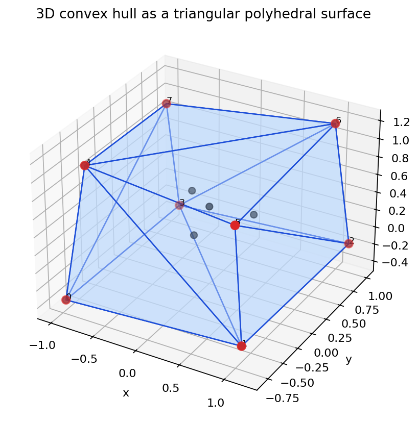
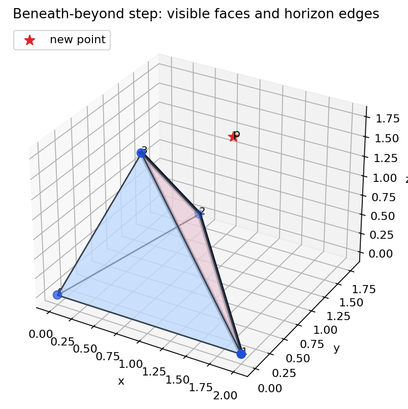
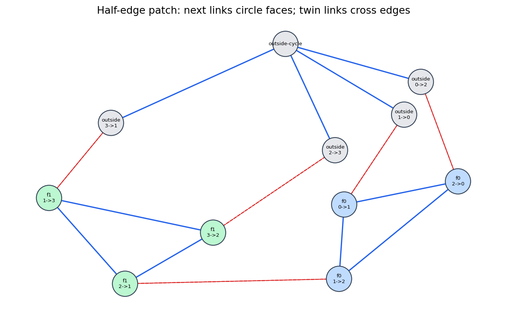
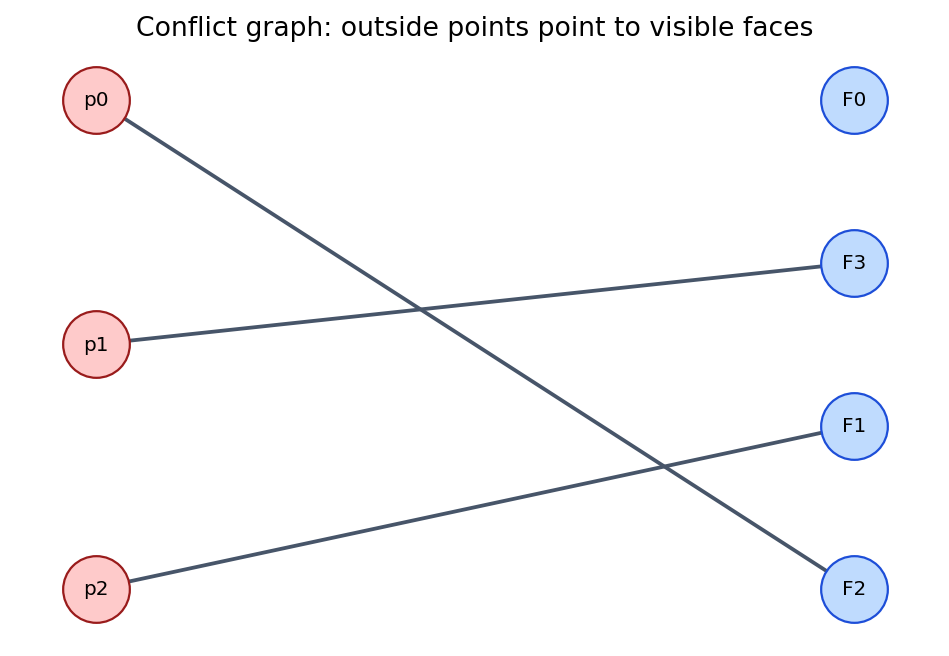
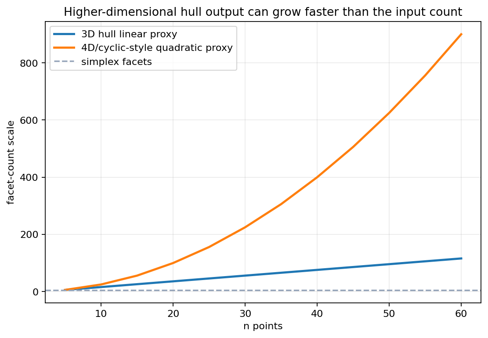

Mathematics
Validity, convexity, Euler characteristic, linear face counts.
Algorithm
Signed volume, visible patch, horizon, cone faces.
Engineering
Records, flags, conflict graphs, robustness policies.
A hull is no longer a cyclic list. It is a mutable polyhedral surface.
Track the 3D hull as incidence data plus predicates: vertices, edges, faces, orientations, visibility, horizon edges, and cleanup.
Source span: printed pages 101-154; PDF pages 110-163. Notebook artifacts are synthetic and source-generated.

Notebook check: \(V=8\), \(E=18\), \(F=12\), \(V-E+F=2\).
Validity, convexity, Euler characteristic, linear face counts.
Signed volume, visible patch, horizon, cone faces.
Records, flags, conflict graphs, robustness policies.
A polyhedron is represented by a finite boundary of planar polygonal faces whose intersections are whole edges, whole vertices, or empty.
For a convex polyhedron with genus zero, \(V-E+F=2\).
| Quantity | Notebook Value | Use In Implementation |
|---|---|---|
| \(V\) | 8 | hull vertices after filtering interior points |
| \(E\) | 18 | unique undirected surface edges |
| \(F\) | 12 | triangular facets from the hull surface |
| \(V-E+F\) | 2 | topological sanity check |
Triangulated hulls satisfy \(3F=2E\), so Euler gives linear edge and face counts.
Remove one face and flatten the boundary to a connected plane graph.
For a tree, \(E=V-1\) and there is one exterior face, so \(V-E+F=2\).
Deleting a non-bridge edge lowers both \(E\) and \(F\) by one, preserving the ledger.
| Family | Core Move | Strength | Implementation Cost |
|---|---|---|---|
| Gift wrapping | Grow face by face across edges. | Output-sensitive \(O(nF)\). | Many orientation searches. |
| Divide and conquer | Sort, split, hull each side, merge surfaces. | Optimal \(O(n\log n)\) exists in 3D. | Merge is subtle and adjacency-heavy. |
| Incremental | Add one point; replace visible patch by cone. | Conceptually direct; implementable. | Naive scan gives \(O(n^2)\). |
| Randomized incremental | Use random order plus conflict graph. | Expected efficient updates. | More bookkeeping around deleted faces. |
Ask which point supports the next face.
Find bridges between two hull surfaces.
Classify visible faces, then stitch a cone.
For oriented face \((a,b,c)\), classify point \(p\) by the sign of
Visible means the new point lies on the outside side of the oriented face. The exact positive or negative convention depends on orientation, so every face must agree.

Visible face: \((1,2,3)\).
Horizon edges: \((1,2)\), \((1,3)\), \((2,3)\).
Cone faces with new point \(4\): \((1,2,4)\), \((1,3,4)\), \((2,3,4)\).
Each horizon edge has exactly one visible incident face, and the number of cone faces equals the number of horizon edges.
| Record | Must Remember | Typical Temporary Flags |
|---|---|---|
| Vertex | coordinates, incident edge | processed, on hull, delete |
| Edge | endpoints, adjacent faces | horizon, new, delete |
| Face | three vertices, three edges | visible, lower, delete |
Visibility, horizon detection, and cleanup are coupled. Mark first, traverse while references still exist, then remove deleted records in a controlled pass.
Each new cone face must point consistently with the surviving hull surface.
Visible faces are removed after horizon edges and new cone faces are recorded.
Edges and vertices unsupported by remaining faces should not survive as stale records.
Declare a deterministic perturbation or tie-breaking rule.
Use arithmetic that preserves determinant signs when inputs are integral.
Compute fast approximate signs, then certify near-zero cases.

Table check: every directed half-edge has a twin.
| Representation | Local Move It Makes Cheap |
|---|---|
| Face list | Enumerate facets; poor adjacency repair. |
| Winged-edge | Traverse both faces around an edge. |
| Half-edge / twin-edge | Follow next around a face and twin across an edge. |
| Quad-edge | Unify primal and dual traversal patterns. |
Can the update walk around the horizon, cross adjacent faces, and repair twins without global reconstruction?

An outside point conflicts with a face when that point can see the face.
| Outside Point | Visible Face |
|---|---|
| p0 | F2 |
| p1 | F3 |
| p2 | F1 |
The conflict graph is bipartite: outside points on one side, hull faces on the other.

Euler ties \(V\), \(E\), and \(F\) linearly for triangulated genus-zero hulls.
Facet counts can grow much faster than the number of vertices.
Runtime statements must mention output size, because writing all faces may dominate the computation.
Given visible face \((1,2,3)\) and new point \(4\), identify the horizon, list the new cone faces, and name two checks that should pass after cleanup.
Valid genus-zero surface, two faces per edge, \(V-E+F=2\).
Signed volume classifies points against oriented faces.
Visible patch is deleted; cone faces attach to horizon edges.
Records, twins, flags, conflicts, and cleanup make the surface mutable.
3D hull construction is a surface-maintenance problem guided by determinant signs.